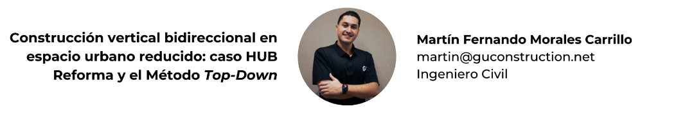

2 Construcción vertical bidireccional en espacio urbano reducido: caso HUB Reforma y el Método Top-Down

2.1 Resumen
Este artículo presenta la implementación del método constructivo Top-Down en el edificio HUB Reforma, ubicado en zona 9 de ciudad de Guatemala. El proyecto contempló la construcción de cuatro sótanos y nueve niveles superiores en un terreno con un ancho de eje a eje de 10 metros, rodeado por calles de alta circulación.
Se ejecutaron pilotes perforados in situ y una losa a nivel de calle, permitiendo la excavación y construcción simultánea de la superestructura. Para estabilizar el perímetro subterráneo se emplearon muros pantalla, y se diseñó un sistema de jardinería profunda para preservar una ceiba existente. La proximidad al aeropuerto La Aurora limitó el uso de grúa hasta el nivel 8, completando los niveles restantes mediante sistemas manuales de izaje. El método permitió optimizar tiempos y resolver condiciones urbanas complejas.
2.2 Abstract
This article presents the implementation of the Top-Down construction method in the HUB Reforma building, located in Zone 9 of Guatemala City. The project involved the construction of four basement levels and nine above-ground stories on a site with a 10-meter span between axes, surrounded by high-traffic streets.
In-situ bored piles and a street-level slab were executed, allowing simultaneous excavation and vertical construction. Underground perimeter stability was ensured through the use of diaphragm walls, and a deep garden system was designed to preserve an existing Ceiba tree.
Due to the building’s location within the takeoff and landing path of La Aurora Airport, the tower crane was only allowed up to level 8; the remaining upper levels were completed using manual hoisting systems. The method proved effective for optimizing time and addressing the challenges of dense urban construction.
2.4 Introducción
En entornos urbanos de alta densidad, la disponibilidad de espacio para ejecutar proyectos de gran envergadura representa un desafío constante para la ingeniería civil. Ante estas condiciones, el método constructivo Top-Down ha demostrado ser una solución eficiente al permitir la construcción simultánea de niveles subterráneos y superiores, optimizando tiempos y reduciendo interferencias en el entorno inmediato.
El edificio HUB Reforma, ubicado en la zona 9 de Ciudad de Guatemala, representa un caso destacado para la aplicación de este método. El proyecto contempló la construcción de cuatro sótanos y nueve niveles superiores sobre un terreno con un ancho de eje a eje de solo 10 metros a nivel de calle, en un área con intensa circulación vehicular. Fue desarrollado entre julio de 2021 y diciembre de 2023.
En este artículo se presentan los aspectos técnicos y logísticos más relevantes del proceso constructivo, incluyendo la secuencia de ejecución, las condiciones particulares del sitio (como la proximidad al aeropuerto La Aurora) y las soluciones adoptadas para preservar elementos naturales y estructurales dentro de un entorno urbano restringido.
2.5 Contexto del proyecto
El edificio HUB Reforma se ubica en la zona 9 de la Ciudad de Guatemala, en un entorno urbano denso, limitado por calles de alta circulación. El terreno cuenta con un ancho estructural de 10 metros entre ejes a nivel superficial, lo cual redujo considerablemente el área operativa para excavación y maniobras. La intervención temporal de la 7ª avenida B fue necesaria para permitir el ingreso de maquinaria pesada y la extracción de más de 56,000 m³ de material.
Figura 2.1: Excavación descendente bajo losa estructural en proceso constructivo tipo Top-Down
Nota. Elaboración propia. Fotografía tomada en el lugar del proyecto.
El proyecto enfrentó también restricciones aéreas debido a su ubicación en la trayectoria de despegue del Aeropuerto Internacional La Aurora, lo cual limitó el uso de grúa torre hasta el nivel 8. Los niveles superiores fueron completados mediante sistemas de izaje manual con dispositivos de tracción mecánica, operados por cuadrillas especializadas en carga vertical. Un reto adicional fue la preservación de una ceiba (Ceiba pentandra), árbol protegido por ley, que obligó a diseñar un sistema subterráneo de jardinería, de cuatro niveles, para mantener activas sus raíces durante y después del proceso constructivo.
Figura 2.2: Área subterránea adaptada para preservar el sistema radicular de la ceiba
Nota. Elaboración propia. La fotografía corresponde al área en donde se preservó el sistema radicular de la ceiba.
2.5.1 Justificación del método constructivo
Frente a las condiciones espaciales, ambientales y logísticas descritas, el método constructivo Top-Down ofreció ventajas significativas frente al sistema tradicional Bottom-up. Esta metodología permitió iniciar simultáneamente la construcción de la superestructura y la excavación descendente, reduciendo el tiempo global de ejecución y limitando el impacto en la infraestructura vial y el entorno inmediato.
La losa de nivel calle funcionó como plataforma estructural de trabajo, brindando estabilidad temprana al perímetro del terreno y permitiendo la operación segura de maquinaria debajo de su superficie.
2.5.2 Secuencia técnica aplicada
El proceso constructivo inició con la perforación de pilotes in situ como elementos de cimentación profunda. Posteriormente se fundió la losa a nivel de calle, que sirvió como base para las operaciones descendentes y ascendentes. Conforme se excavaban los niveles subterráneos se ejecutaban muros de pantalla para estabilizar el terreno. En paralelo, se avanzaba con la construcción de los niveles superiores, permitiendo el uso eficiente del tiempo y el espacio disponible.
Figura 2.3: Fundición de muro pantalla mediante bombeo de concreto en nivel subterráneo
Nota. La fotografía corresponde al momento en que se fundió el muro de pantalla. Elaboración propia.
2.5.3 Resultados observados
La implementación del método constructivo Top-Down permitió la extracción controlada de aproximadamente 56,000 metros cúbicos de material, sin generar afectaciones sobre las vías circundantes ni interrumpir el tránsito urbano. Esta metodología facilitó la ejecución simultánea de cuatro niveles subterráneos y nueve niveles superiores, cumpliendo con el cronograma general del proyecto establecido entre julio de 2021 y diciembre de 2023.
Figura 2.4: Vista final del edificio HUB Reforma
Nota. Elaboración propia. Visión panorámica del edificio Hub Reforma tras su ejecución con el sistema Top-Down.
El sistema respondió de manera efectiva ante los principales desafíos del proyecto, incluyendo la geometría restringida del terreno, las restricciones impuestas por la franja aérea del Aeropuerto Internacional La Aurora, y la conservación de elementos naturales como la ceiba protegida. Estos resultados validan la eficiencia y adaptabilidad del sistema Top-Down en contextos urbanos complejos, posicionándolo como una solución viable para proyectos de gran escala en ciudades con alta densidad.
2.6 Conclusiones
La implementación del sistema Top-Down en el edificio HUB Reforma permitió optimizar el tiempo de ejecución mediante la construcción simultánea de niveles subterráneos y superiores, garantizando la operatividad del entorno urbano durante todo el proceso.
El método demostró alta adaptabilidad frente a restricciones logísticas, geométricas y normativas, incluyendo la limitación aérea impuesta por el aeropuerto, la geometría reducida del terreno y la conservación de un árbol protegido dentro del volumen excavado.
La solución estructural basada en pilotes perforados in situ, losa de arranque y muros pantalla proveyó estabilidad temprana al sistema y evidencia su viabilidad técnica para futuros proyectos en entornos urbanos densos de características similares.
2.7 Referencias
[1] Barrientos, P. (2023). Cómo escribir un artículo con estilo APA: Pautas y consejos. Acta Académica. https://www.aacademica.org/pedro.barrientos/9.pdf
[2] Geotech Rijeka. (2025). Top-down construction method. https://www.geotech.hr/en/top-down-construction-method/
[3] Keller Cimentaciones. (2025). Muros pantalla. https://www.keller.com.es/experiencia/tecnicas/muros-pantalla